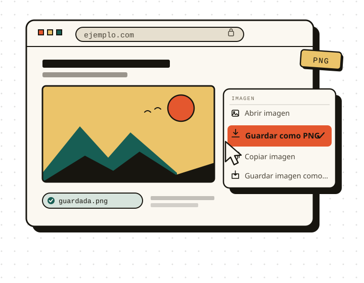

Tres formatos, una misma acción
PNG para capturas y transparencias, JPG para fotos ligeras y WEBP cuando buscas equilibrio. Eliges una vez y cada guardado respeta tu preferencia.
Extensión para Firefox
Save to Image añade «Guardar como PNG» al menú contextual de Firefox. Conserva la imagen que estás viendo —o cámbiala a JPG o WEBP— sin abrir pestañas ni copiar enlaces.

01 — Cómo funciona
El recorrido completo, desde la imagen hasta tu carpeta de descargas.
Colócate sobre la imagen que quieres conservar y haz clic derecho. La opción aparece junto al resto de acciones de Firefox.
La extensión convierte y descarga la imagen con el formato que tengas configurado. Si prefieres JPG o WEBP, se respeta tu ajuste.
El archivo queda en tu carpeta de descargas, listo para usar. No se abre ninguna pestaña ni se interrumpe la página.
02 — Lo que hace bien
Una sola tarea resuelta con cuidado, sin funciones que no vas a usar.
PNG para capturas y transparencias, JPG para fotos ligeras y WEBP cuando buscas equilibrio. Eliges una vez y cada guardado respeta tu preferencia.
La acción vive en el menú contextual. No hay paneles que aprender ni pasos intermedios: clic derecho y listo.
No recopila datos ni pide cuenta. La imagen se convierte en tu navegador y se guarda directamente en tu equipo.
Funciona sobre cualquier imagen de cualquier página en Firefox de escritorio. Se instala desde el sitio oficial de complementos de Mozilla y aparece en el menú contextual.
03 — Formatos
Configura una preferencia y olvídate: cada clic derecho usará ese formato. Si un día necesitas otro, cámbialo en los ajustes de la extensión.
Capturas, gráficos y transparencias.
Fotografías y uso cotidiano.
Web, peso y calidad en equilibrio.
Una última cosa
Gratis · Instalación desde addons.mozilla.org